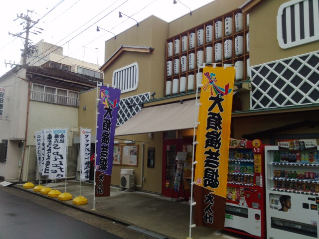

名古屋紅玉会議零参 に行ってきた
2月11日(土)にあった名古屋 Ruby 会議のことです． 会場が大須演芸場だったので，それっぽくしたのでしょう． こういうのすごくいいよね．

会場
いきさつ
定期的に勉強会をチェックしてたら見つけたんだと思う．
ちなみに
Ruby は好きです． 純粋オブジェクト指向言語 ってのがいいよね． 普段は静的型検査のある言語を使うことが多いけど，「スクリプトの方が楽だな」って時はだいたい Ruby を使う．
ただ，Rails は使ったことないや．
芸が細かい
演芸場ということで，講釈台に座布団に正座でプレゼン(スライドは使ってた)をし，みんな羽織を着て話を始めて自己紹介(枕)が終わると脱いでた． 他にも，講演者が交代するたびに座布団を裏返したり，めくりがあったり，小拍子があったり(みんな鳴らしてた)．
ハイライト
- 前座LT その１
- Hamamatsu.rb
- ここから 1.5 h
- 近いね！
- Ruby Friends
- Rubyの勉強会やらカンファレンスやらの写真を投稿するサイト
- みんな Ruby が得意なフレンズなんだ！
- 今写真撮って投稿
- Hamamatsu.rb
- 前座LT その２
- CoderDojo
- の Webサイト作ってる
- もちろん Rails 製
- scrivito でできてる
- Rails 用の CMS
- Rails が分からんでも記事が書ける
- GitHub で公開中
- Ruby Business Users Conference 2017 (2/23)
- CoderDojo
- Ruby/Rails 初めてのチームの力をメキメキ付けた
- ぺろぺろ
- 社内用に作った GitHub のプルリクにフックして動作する Bot フレームワーク(Slack で使ってるらしい)， prpr の紹介
- GitHub でプルリク中心開発
- 運用ルールが多い
- Bot化
- PR の重要度を計算したり，コンフリクトラベルを自動で付けたり，レビュー数を数えたり
- 詳しくはリポジトリ参照
- 目標
- gem による拡張
- 管理者以外でも設計・変更
- 運用し始めたときに一人しかできないとだるい
- heroku で動作
- さっさと動かす
- そもそも運用だるいからスタートしてるし
- 週末2日でガーッと作った
- やらなかったこと
- WEB UI をつくらない
- 認証機能とかつくるのだるい
- Bitbucket/GitLab/… の(対応とかは)ことは忘れる
- WEB UI をつくらない
- 命名
- Azupr
- 天才かよ(夜中の12時)
- Apache ArrowのRubyバインディングをGObject Introspectionで
- めっちゃ小拍子をつかう(笑)
- 扇子も用意！
- Ruby でデータ分析がしたい
- 道具が無い
- やる(道具整備を)
- Java Python がそろってる
- Arrow
- いろんなデータのやり取りを可能にする
- Ruby を Arrow に対応させる！
- これはチャンス
- もらってもデータ処理する道具がガガガ
- LDA をやってみる
- lda-ruby がある
- が使わない
- Arrow の意味がなくなちゃう…
- なので Python つかうよ！
- Ruby(Rroonga) => Arrow => Python(データ処理) => Ruby(Rroonga)
- Ruby(Rroonga) は文字列を数字(ID)にしてる
- Arrow をやる！ ！/
- ひと手間かけるだけでおいしくいただける！(Ruby 感を出す(構文の話))
- Garbage in, Garbage out (微妙な結果だった…)
- 前処理を頑張る
- lda-ruby がある
- 今後
- Rroonga の Python 版を作る
- と Ruby も Arrow も….
- 高速にできるけど
- Rroonga の Python 版を作る
- (このあたりからメモとるの力尽きた)
- 独習 mruby
- Ruby で Tensorflow
- tensorflow.rb
- なんとかできけど…
- 結論：人類にはまだ早い
- Fight with growing data on Rails
- どうやって Ruby で楽にデータサイエンスをするか…
- Rails でデータサイエンスはつらい
- re: rinda
- 並列処理に関する DSL (?) Linda の Ruby 版
- 「並列プログラムの作り方」 でやってみるといい
- Linda でプログラミングしてる
- 並列系のプログラミングは問題定義で結果を魅せれる
- 行列計算すごくいい
- 「ここは(三項演算子じゃなくて) if 文の方が読みやすい」
- 大喜利大会！
- 「(最近賛否両論で話題の) rubocop についてどう思いますか？」「是非が言われるくらい話題になるモノを作りたいですね」
- 「すご～い」「どうしたんですか？」「Matz が2回もコミットしてる！」
- 「なおしました(rubocopが)！」「なにをですか？」「三項演算子を if になおしました」
感想
Ruby 系の勉強会は Ruby 色強くて面白い． Python 系はだいたい Python 自体はおまけ感あるから(それはそれで面白いけど)．
あと，大喜利面白すぎ． ぜひまたやってほしい(登壇者の負担がやばいが)．
やってみようと思う
最後の関さんの発表であった「並列プログラムの作り方」，一応そっちの研究してるし，Rinda でやってみようかな． ということで，図書館で借りてきた． 名〇屋大学の図書館，新しい書籍ちっっっともないけど，こういう古の本はだいたいあるから助かる．
おしまい
みんな，け〇のフレンズのネタやってる．